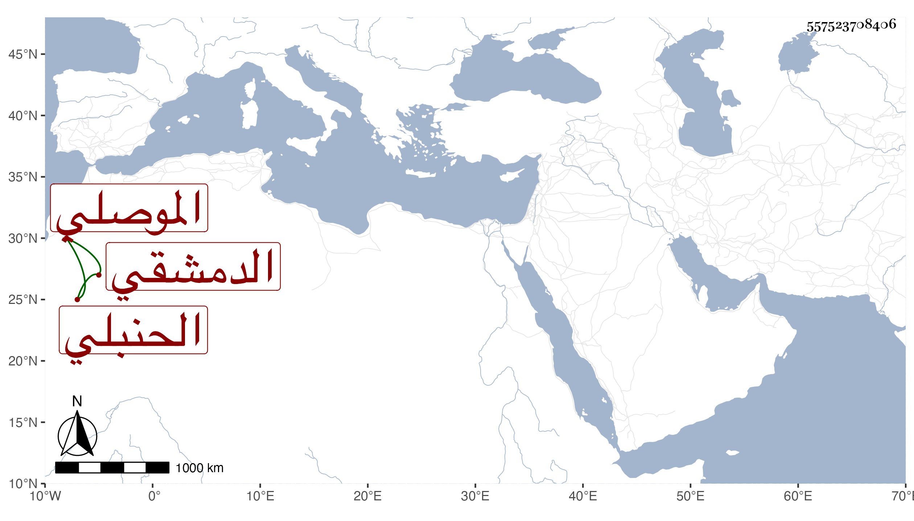

0902Sakhawi.DawLamic.ITO20230111-ara1.EIS1600.557523708406
Biography ID: 557523708406
950
علي بن محمد بن أبي بكر بن زيد العلاء الموصلي ثم الدمشقي الحنبلي أخو الشهاب أحمد الماضي ويعرف كهو بابن زيد . سمع ثلاثيات مسند على أحمد علي وحدث بها سمعها بعض الطلبة ممن أخذ عني وقال إنه مات في رجب سنة اثنتين وثمانين قال وكان صالحا زاهدا ورعا رحمه الله .
